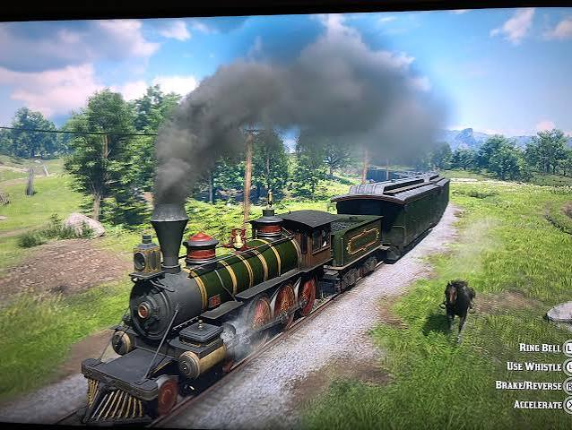
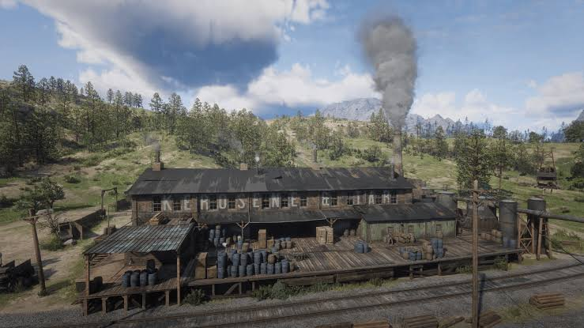
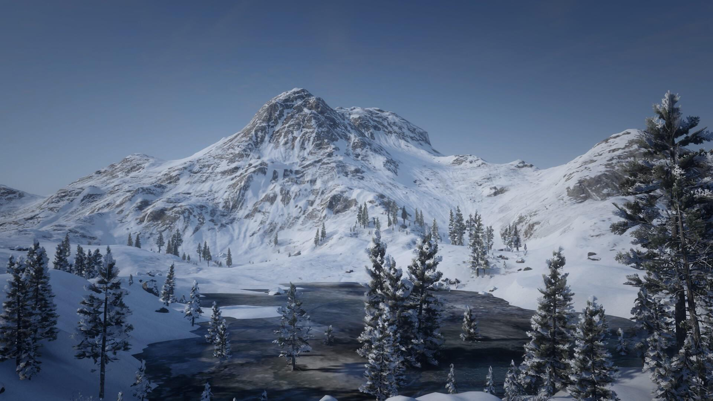

O Ano de 1899: O Fim do Velho Oeste

A história de Red Dead Redemption 2 se passa no ano de 1899, um período histórico de profunda transformação nos Estados Unidos. O país estava deixando para trás o caos da era da fronteira selvagem para entrar na modernidade industrial. Com a expansão das ferrovias, a chegada do telégrafo e o fortalecimento de agências federais de lei, a vida de fora da lei tornou-se quase impossível.
O jogo retrata com maestria o sentimento de nostalgia e melancolia daqueles que viviam à margem da sociedade. A gangue Van der Linde é o reflexo direto desse conflito: homens e mulheres que acreditavam na liberdade absoluta da vida selvagem, mas que agora se veem encurralados por um mundo cada vez mais civilizado e regrado.
Cidades e Contrastes

O mapa do jogo é dividido em cinco estados fictícios inspirados em regiões reais dos EUA, abrigando cidades que contam a história do avanço americano. No coração de tudo está Saint Denis, uma metrópole barulhenta e poluída inspirada em Nova Orleans, cheia de fábricas, bondes e uma sociedade de alta classe que despreza as pessoas do campo.
No extremo oposto, temos lugares como Valentine, uma típica e lamacenta cidade pecuarista do Velho Oeste, onde tiroteios e brigas de bar ainda são comuns; e Rhodes, uma cidade do sul marcada por tensões entre famílias ricas e antigas plantações. Cada localidade possui sua própria economia, clima e habitantes únicos.
Um Continente em Miniatura

A genialidade da ambientação de Red Dead Redemption 2 está na diversidade de seus biomas. A jornada da gangue começa em Ambarino, uma região montanhosa brutalmente fria e coberta por nevascas espessas. À medida que o jogo avança, os cenários mudam drasticamente, exigindo que os jogadores e os cavalos se adaptem.
Os jogadores cavalgam pelas planícies verdejantes de New Hanover, exploram os perigosos pântanos cheios de crocodilos de Lemoyne e podem até visitar a poeirenta região desértica de New Austin. O clima é totalmente dinâmico e afeta a jogabilidade: Arthur precisa vestir casacos pesados no frio ou roupas leves no calor para manter sua saúde e energia, provando que o próprio ambiente é um dos maiores personagens da obra.